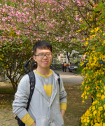

|
陈 慧娜
|
 |
硕士研究生,
控制科学与工程系,
同济大学
曹安公路4800号同济大学嘉定校区智信馆
201804 上海, 中国
Phone: +86 13851396026
E-mail: hnchen@tongji.edu.cn
WeChat: 13851396026
|
About me
2016年毕业于江南大学，现于同济大学电子与信息工程学院攻读硕士学位.
项目经历
2017.9 - 今 不确定性环境下的无人车轨迹规划
2017.9 – 今 无人车的决策、轨迹、规划控制系统
搭建CarMaker及Simulink联合仿真测试平台，模拟无人车在各类交通场景的行驶
搭建基于规则的有限状态机，在Stateflow平台上实现无人车决策
基于多项式曲线算法，结合环境信息，实现无人车轨迹规划
基于前馈加反馈的控制算法，实现无人车控制
2016.9 – 2017.9 基于环视的自动泊车系统
2014.4 – 2015.7 老人与小孩监护的可视化定位系统
基于单片机、GPS、摄像头获取当前位置及图像
基于GSM/GPRS、蓝牙传输当前位置及图像
社会实践
获奖情况
2016.12 全国研究生数学建模竞赛三等奖
2015.08 全国电子设计大赛江苏赛区二等奖、校优秀团员
2015.10 江南大学学业二等奖学金、英飞凌科技奖学金
2014.10 江南大学学业二等等奖学金、学习奋进奖学金
2013.10 江南大学学业三等奖学金、远翔三等奖学金
技能
A brief cv.
|